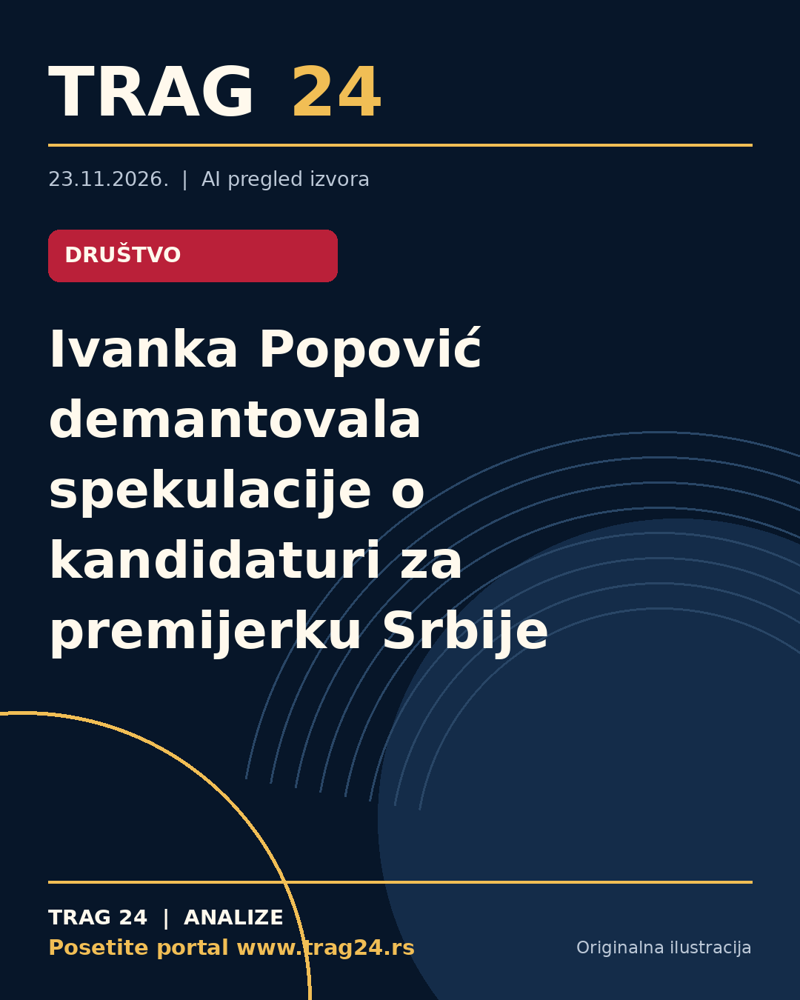

Ivanka Popović demantovala spekulacije o kandidaturi za premijerku Srbije

ŠTA SE DOGODILO
Ivanka Popović, bivša rektorka Univerziteta u Beogradu i jedna od osnivača inicijative ProGlas, izjavila je da nije vodila nikakve razgovore niti pregovore u vezi sa preuzimanjem funkcije u Vladi Srbije, uprkos brojnim spekulacijama u javnosti da bi mogla biti kandidat za premijerku.
HRONOLOGIJA
U intervjuima objavljenim istog dana na televiziji N1 i u emisiji 'Utisak nedelje', Popović je javno odgovorila na spekulacije koje su se širile putem društvenih mreža i drugih izvora. Njen demanti usledio je nakon što su joj prijatelji slali informacije o tim spekulacijama. Takođe je rekla da, ukoliko dođe do kontakta sa studentima o eventualnoj funkciji, komunikacija neće biti javna preko društvenih mreža.
ŠTA NAVODE IZVORI
Izvor Danas prenosi da je Popović istakla da nije vodila nikakve pregovore o funkciji i da će se eventualno o tome izjasniti ako dođe do zvaničnih kontakata. Izvor Nova.rs naglašava da su članovi ProGlasa, inicijative koju je Popović pomogla da osnuje, od početka jasno poručivali da nisu u potrazi za državnim pozicijama. Oni takođe navode da Popović nije imala nikakve razgovore niti pregovore vezane za funkcije u vlasti.
ŠTA JE POTVRĐENO
Potvrđeno je da Ivanka Popović nije imala zvanične razgovore niti je pregovarala o preuzimanju premijerske ili bilo koje druge funkcije. Takođe, od strane nje je istaknuto da članovi ProGlasa ne traže državne pozicije, što potvrđuje stav da spekulacije nisu bazirane na aktivnim pregovorima.
ŠTA NIJE POTVRĐENO
Nije potvrđeno da će Ivanka Popović biti kandidatkinja za premijersku funkciju niti da postoje bilo kakvi zvanični planovi da preuzme funkciju u budućoj vladi. Nema informacija o eventualnim budućim kontaktima koji bi mogli rezultirati ponudom za funkciju.
ŠTA OSTАJE OTVORENO: Ostaje otvoreno pitanje da li će u budućnosti doći do bilo kakvih kontakata ili razgovora o angažovanju Ivanke Popović u vlasti, jer ona navodi da bi se tada o tome izjasnila. Takođe nije poznato na koji način bi eventualne ponude ili razgovori bili vođeni i kako bi bila zvanično saopštena.
Izvori
- https://www.danas.rs/vesti/politika/ivanka-popovic-premijerka-razgovori/
- https://nova.rs/vesti/politika/ivanka-popovic-o-spekulacijama-da-ce-biti-premijerka/
Ova analiza je pripremljena uz pomoć veštačke inteligencije na osnovu javno dostupnih izvora. Navodi izvora nisu nužno nezavisno potvrđeni.